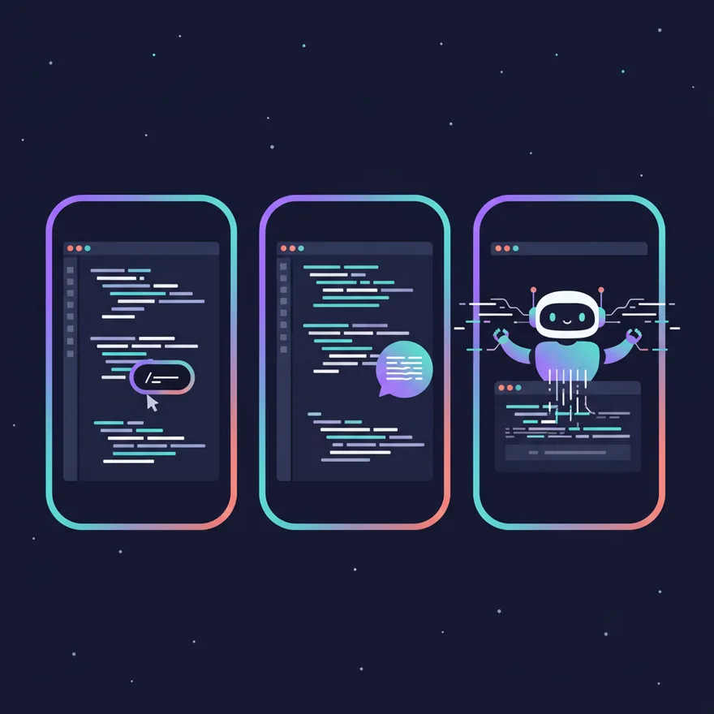

หน้าหลัก › โมดูล 1: Claude Code คืออะไร ทำไมต้องใช้
บทเรียน 1.1
Claude Code vs Copilot vs Cursor
รู้ใน 30 วิ
ทั้งสามตัวช่วยเขียนโค้ดด้วย AI แต่คนละระดับ Claude Code คือ agent ในเทอร์มินัลที่ลงมือทำเองหลายขั้นจนงานเสร็จ ไม่ใช่แค่เติมโค้ดให้
Copilot = เติมโค้ดCursor = AI editorClaude Code = AI agent

ต่างกันยังไง?
ยิ่งไปทางขวา ยิ่งทำงานเองได้มากขึ้น
✍️
Copilot
เติมโค้ดให้ขณะพิมพ์ ทีละบรรทัดหรือฟังก์ชันเล็ก ๆ
บรรทัด
🧩
Cursor
editor ฝัง AI คุยแก้โค้ดได้หลายไฟล์ผ่านแชท
หลายไฟล์
🤖
Claude Code
agent ในเทอร์มินัล รับเป้าหมายแล้วลงมือทำเองทั้งงาน
ทั้งโปรเจกต์
Claude Code ไม่ได้แค่แนะนำโค้ด มันลงมือทำเอง: อ่านไฟล์ แก้ รันเทส วนซ้ำจนเสร็จ
ทำไม Claude Code ทำได้มากกว่า?
เพราะมันอยู่ในเทอร์มินัลจริง เลยใช้เครื่องมือจริงได้
1
อยู่ในเทอร์มินัล
ทำงานในหน้าจอคำสั่งจริง ไม่ได้ถูกจำกัดอยู่แค่ใน editor
2
ใช้เครื่องมือจริง
อ่านและแก้ไฟล์ รัน git, build, test ได้เอง
3
ทำงานเป็นลูป
ลองแก้ เช็กผล ถ้ายังพังก็แก้ต่อ จนกว่าจะผ่าน
ลองเลย จับมือทำ
- เปิด เทอร์มินัล ในโฟลเดอร์โปรเจกต์ของคุณ
- พิมพ์
claudeแล้วกด Enter เพื่อเริ่มคุยกับ Claude Code - วาง prompt ข้างล่างนี้ แล้วดูมันอ่านโปรเจกต์ให้เอง
ลองใช้ Prompt นี้กับ Claude
อธิบายโครงสร้างโปรเจกต์นี้ให้ฟังหน่อย มีไฟล์สำคัญอะไรบ้าง และแต่ละส่วนทำหน้าที่อะไร
เคล็ดลับ: ไม่ต้องเลือกตัวเดียว หลายคนใช้ Copilot เติมโค้ดระหว่างพิมพ์ และใช้ Claude Code ทำงานใหญ่ที่ต้องคิดหลายขั้น
สรุปบทนี้
- Copilot = เติมโค้ด · Cursor = AI editor · Claude Code = agent
- Claude Code ทำงานหลายขั้นเองในระดับทั้งโปรเจกต์
- เลือกเครื่องมือตามขนาดงาน และใช้ร่วมกันได้
แบบทดสอบท้ายบท
ลองตอบดู แล้วระบบจะเฉลยให้ทันที
ข้อ 1.GitHub Copilot ทำหน้าที่หลักอะไร?
เฉลย: Copilot จะช่วยเติมโค้ดให้เราอัตโนมัติขณะที่เรากำลังพิมพ์อยู่
ข้อ 2.อะไรคือความสามารถพิเศษที่ทำให้ Claude Code แตกต่างจาก Copilot และ Cursor?
เฉลย: Claude Code เป็น AI ที่ทำงานหลายขั้นตอนเองได้ เช่น แก้บั๊กทั้งโปรเจกต์ โดยไม่ต้องสั่งทีละขั้น
← ก่อนหน้านี่คือบทแรกถัดไป →Agentic Mode คืออะไร